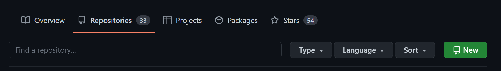

FAIRly share your data and code#
2024.10.01, 2024.10.15, 2024.10.22
Goals#
Understand how to archive data on Zenodo and make them FAIR-compatible.
Create a repository on Github and archive the content (which can be data or code) on Zenodo automatically whenever there is a release.
Zenodo#
 By CERN Data Centre & Invenio, CC-BY 4.0
By CERN Data Centre & Invenio, CC-BY 4.0
Zenodo is an open repository aiming for hosting all kinds of research materials, including but not limited to data, code, images, presentations, papers, and documentation. Zenodo is operated by CERN under the EU/EC OpenAIRE program.
Goal 1 procedure#
Register a Zenodo account#
You can use your Github/ORCID to register a Zenodo account if you have one or are creating one. What is ORCID?
(We’ll ask to to create a Github account later during this session.)
Attempt to create an Upload#
During the upload, you’ll also be asked to provide a license (if for open access) and deal with a DOI.
A license can be given in two ways:
By choosing one in the dropdown menu
By including a license file in the uploaded zip file.
Typically we want a new DOI to be associated with the new upload unless there has been other DOI issued to you. If you want to get the DOI before finalizing and publishing the upload, you can choose the “reserve DOI” option. DOI registration is permanent! You cannot remove/delete a DOI once it is given to your submission. I’ll let you decide whether you try this functionaility or not during this session.
If you have companian material (such as a journal paper or a conference presentation), you can fill in the related/alternate identifiers to link the upload to the companians.
Don’t forget to prepare the other metadata as much complete as possible! This determines how easy the upload to be reused by other people.
Github#
 Github icon By Font Awesome, CC-BY 4.0
Github icon By Font Awesome, CC-BY 4.0
Github is an online hosing service for software, code, and documentation using Git as the tool of version control. You don’t need to install Git to use Github, and vise versa. However, I recommend that you use Git along with Github for a good integration of the data science ecosystem.
Goal 2 procedure#
We assume you already have a Github account. If not, it won’t take much time to register one 🙂
Create a Github repository#
On Github, go to “Your repositories” and you’ll see the page as below. Click the green button saying “New.”

If you have decided a license you are going to use for this repository, you can choose it from the drop-down menu here. Otherwise, you can leave it blank and specify the license later. Any material without a given license is completely copyrighted.
If you are new to Git/Github, you can also skip the Add .gitignore section.
After you create a new repository, you can try to add any content using the interface provided by Github (e.g., the “Add file” button).
Clone this Github repository to your local machine#
Remember that we will use the Callysto Hub as the local machine, although it’s technically on the cloud.
Once you log into the Callysto Hub, change the URL from https://hub-xx.callysto.ca/jupyter/user/xxx…./tree to https://hub-xx.callysto.ca/jupyter/user/xxx…./lab for the JupyterLab GUI. Click the blue buttom with a plus sign on it to open the launcher page.

Initiate a terminal session by clicking the terminal icon on the launcher page. New you can clone the repository we just created on Callysto using the following command-line prompt:
git clone https://github.com/YOUR-ID/YOUR-REPO-NAME.git
You have to change YOUR-ID to your Github user name and YOUR-REPO-NAME to the repositry name you want to be cloned. Once done, you should see a new folder in the left sidebar (file browser) that shows the repository name. Now you have copied the content from Github to Callysto and can continue to add new content on Callysto.
Make commits and push them to Github#
Once you have new content in the repository, it is time to tell Git to track the change. This is an action called a “commit.”
To commit the first time on a machine, you’ll need to configure the following information:
git config --global user.name "YOUR NAME"
git config --global user.email "YOUR.EMAIL@some.domain.edu"
git config --global core.editor "nano"
Now you can commit new content by the following commands: (Make sure your terminal is at the right path before doing this!)
git add .
git commit
If you want to update the remote repository with the new changes (aka to “Push”), you have to create a Github personal access token for security purposes. Once you have it, type the command below in the terminal:
git push
Enter your Github username and the access token – now the commits have been pushed to Github!
Link the Github repository to Zenodo#
At any time during the developement, you can hook the repository on Zenodo by going to Zenodo’s “Github” settings:

Flip the switch to on, and you are done!
Create a release#
When you are ready to publish the repository, create a release on Github:

We need to wait for a while for the release to be registered on Zenodo (which could take from a few minutes to a few days), but once it is done, you should be able to see your repository appeared as an upload with a DOI linked to it!